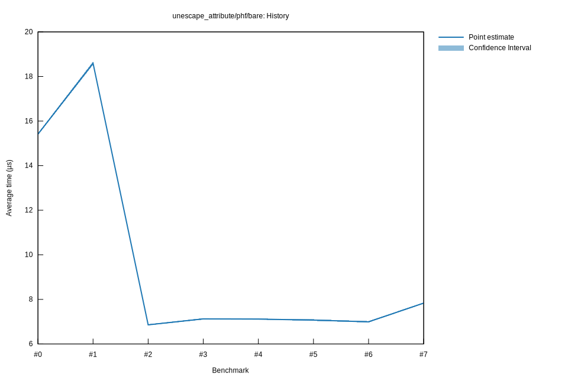

# 52025-10-31T17:50:19-07:00
|
Lower Bound |
Estimate |
Upper Bound |
| Value: |
7.04µs |
7.07µs |
7.11µs |
| Throughput: |
2290.30MiB/s |
2278.63MiB/s |
2265.98MiB/s |
| Change in Value: |
-1.4854% |
-0.7264% |
+0.0001% |
| Change in Throughput: |
+1.5078% |
+0.7318% |
-0.0001% |
Change within noise threshold.
# 42025-10-29T22:29:10-07:00
|
Lower Bound |
Estimate |
Upper Bound |
| Value: |
7.09µs |
7.12µs |
7.14µs |
| Throughput: |
2271.93MiB/s |
2264.27MiB/s |
2256.03MiB/s |
| Change in Value: |
-0.5919% |
+0.0816% |
+0.8442% |
| Change in Throughput: |
+0.5954% |
-0.0816% |
-0.8372% |
Change within noise threshold.
# 32025-10-29T22:22:35-07:00
|
Lower Bound |
Estimate |
Upper Bound |
| Value: |
7.09µs |
7.13µs |
7.16µs |
| Throughput: |
2271.28MiB/s |
2261.46MiB/s |
2250.77MiB/s |
| Change in Value: |
+2.8735% |
+3.6043% |
+4.3667% |
| Change in Throughput: |
-2.7932% |
-3.4789% |
-4.1840% |
No change in performance detected.
# 22025-10-29T19:46:59-07:00
|
Lower Bound |
Estimate |
Upper Bound |
| Value: |
6.83µs |
6.86µs |
6.89µs |
| Throughput: |
2357.66MiB/s |
2348.99MiB/s |
2339.80MiB/s |
| Change in Value: |
-63.352% |
-62.948% |
-62.601% |
| Change in Throughput: |
+172.87% |
+169.89% |
+167.39% |
No change in performance detected.
# 12025-10-29T19:03:46-07:00
|
Lower Bound |
Estimate |
Upper Bound |
| Value: |
18.52µs |
18.59µs |
18.67µs |
| Throughput: |
869.93MiB/s |
866.56MiB/s |
862.90MiB/s |
| Change in Value: |
+19.069% |
+20.449% |
+21.828% |
| Change in Throughput: |
-16.015% |
-16.978% |
-17.917% |
No change in performance detected.
# 02025-10-26T16:48:01-07:00
|
Lower Bound |
Estimate |
Upper Bound |
| Value: |
15.37µs |
15.41µs |
15.46µs |
| Throughput: |
1048.42MiB/s |
1045.49MiB/s |
1042.41MiB/s |